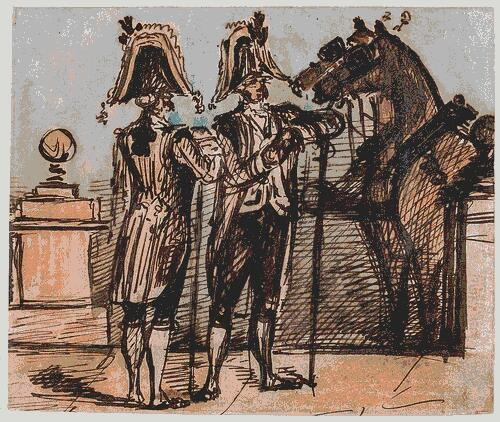

reading list, short. No angle yet. Draft notes here.
Old texts (free online)
Lodovico Dolce, Dialogo della pittura (L'Aretino), 1557.
Venice answers Vasari: colore vs disegno, Titian vs Michelangelo.
wikipedia
Roger de Piles, Dialogue sur le coloris, 1673.
The Rubéniste side of the querelle du coloris at the Académie.
wikipédia: querelle
Horace Lecoq de Boisbaudran, L'Éducation de la mémoire pittoresque, 1848.
Look, then draw from memory. Taught Fantin-Latour, Rodin (?).
archive.org frarchive.org en, 1911

Charles Baudelaire, Le Peintre de la vie moderne, Le Figaro, 1863.
On Constantin Guys. The sketch as modernity. Ch. II, le croquis de mœurs.
wikisource
Max Klinger, Malerei und Zeichnung, Leipzig, 1891.
Painting renders the visible, drawing (Griffelkunst) can go where the visible doesn't.
archive.org de
George Moore, Impressions and Opinions, 1891.
Degas chapter. Degas on drawing from memory.
archive.org
Books
Paul Valéry, Degas Danse Dessin, 1936.
« Le dessin n'est pas la forme, il est la manière de voir la forme. »
Kimon Nicolaïdes, The Natural Way to Draw, 1941. Gesture, timed poses. A method, not a theory.
Betty Edwards, Drawing on the Right Side of the Brain, 1979.
The neuroscience is dated, the exercises are not.
John Berger, Berger on Drawing, ed. Jim Savage, 2005.
Tim Ingold, Lines: A Brief History, 2007.
Deanna Petherbridge, The Primacy of Drawing, Yale, 2010.
Research (to find, refs unchecked)
Cohen & Bennett, « Why can't most people draw what they see? », 1997.
Perception vs hand vs decision errors.
John Tchalenko, eye-tracking of portrait painters and copying (?).
Rebecca Chamberlain, observational drawing skill and perception (?).